Sommer in Graz - CSD - Fest der Liebe für Alle
 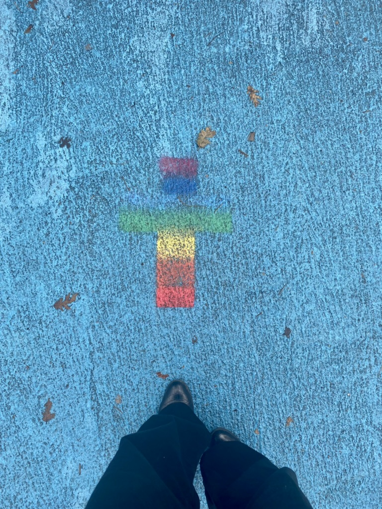
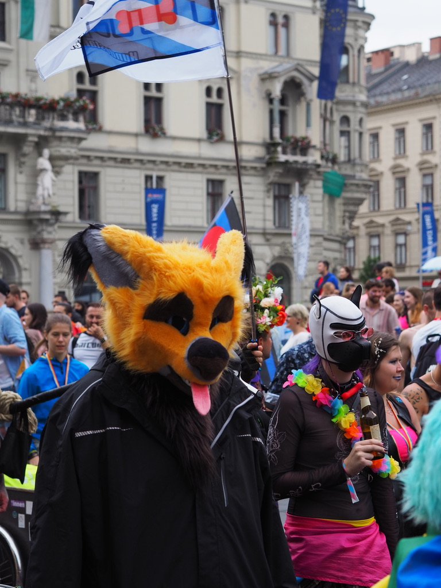
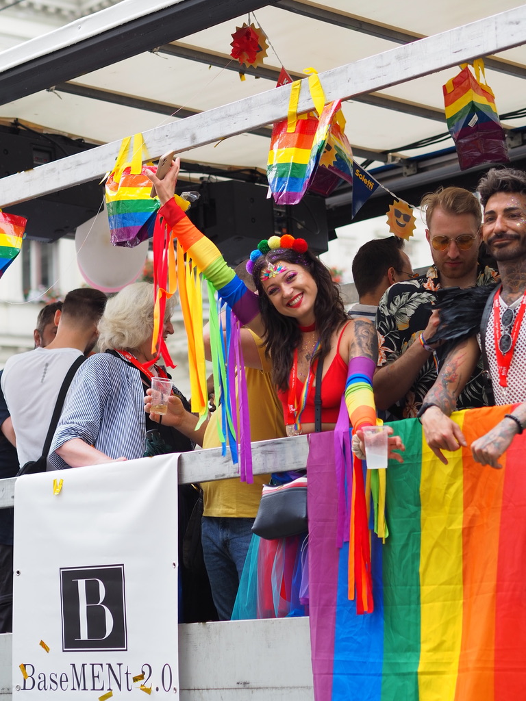
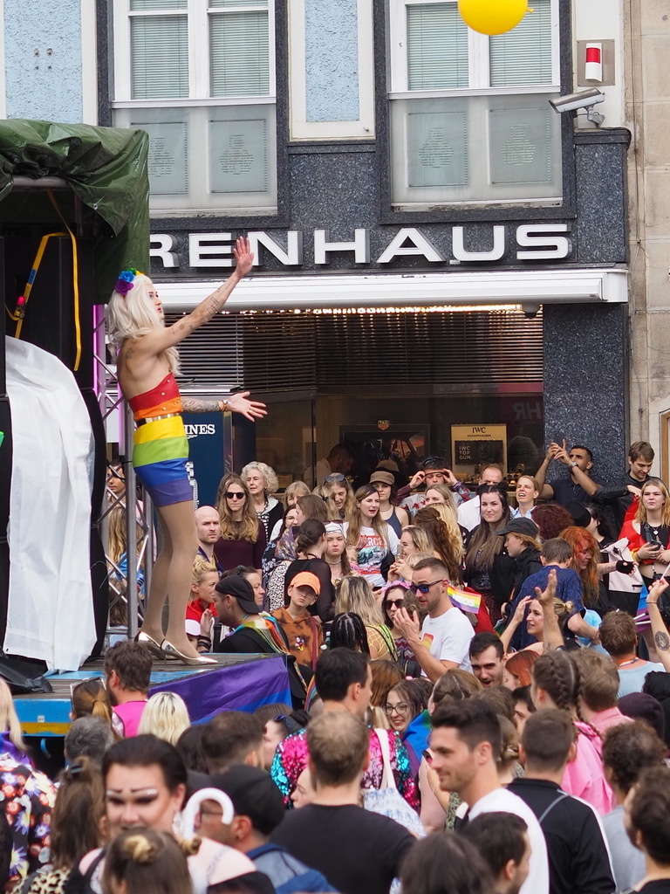
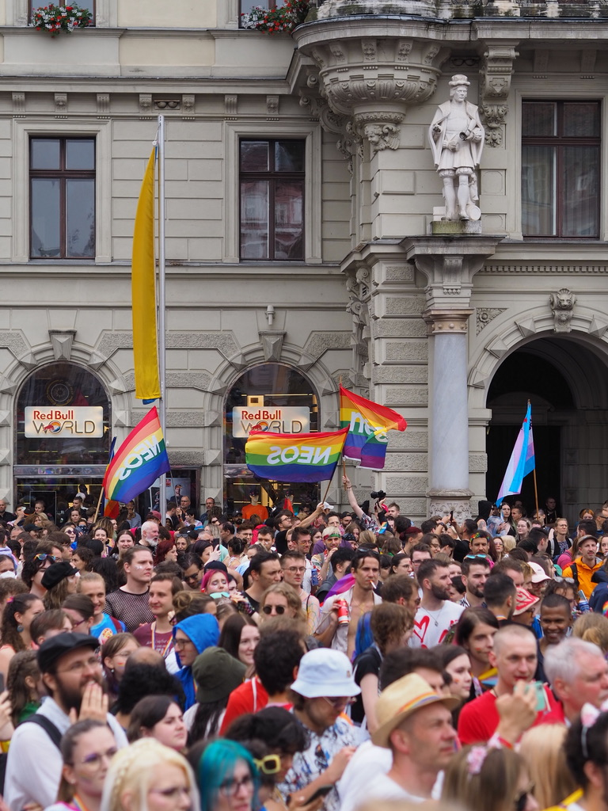
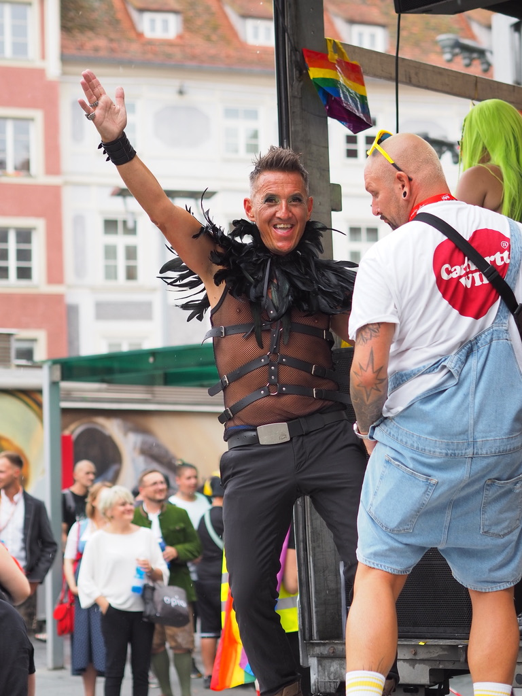
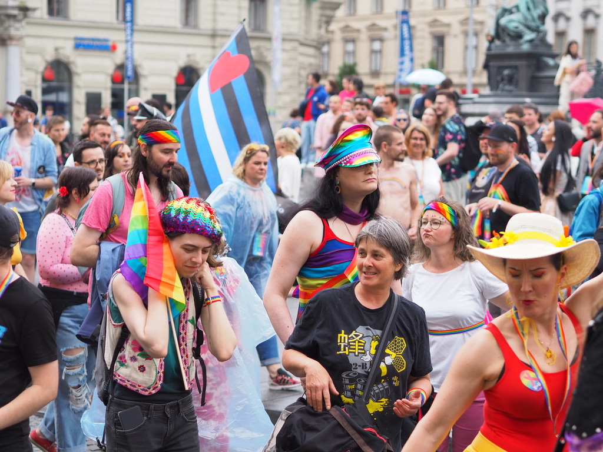
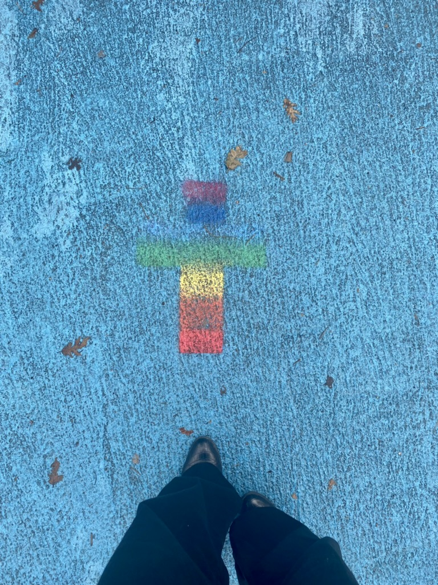
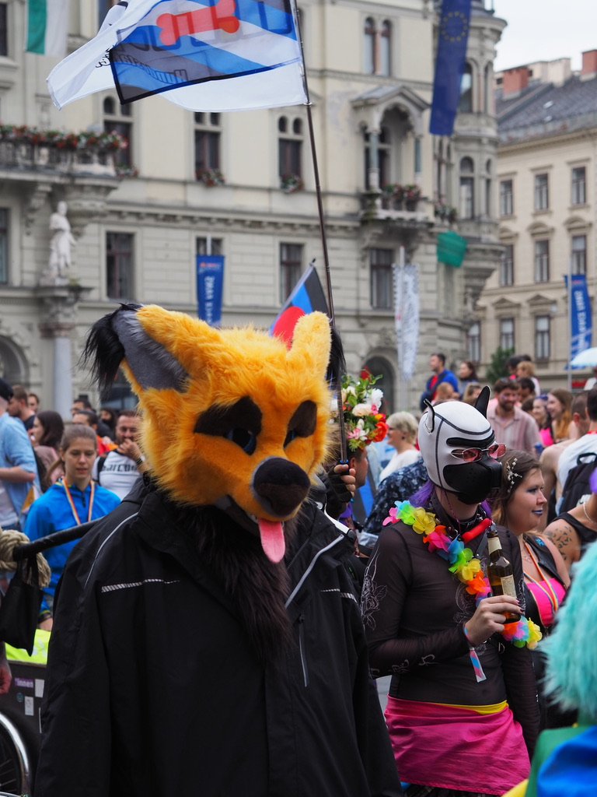
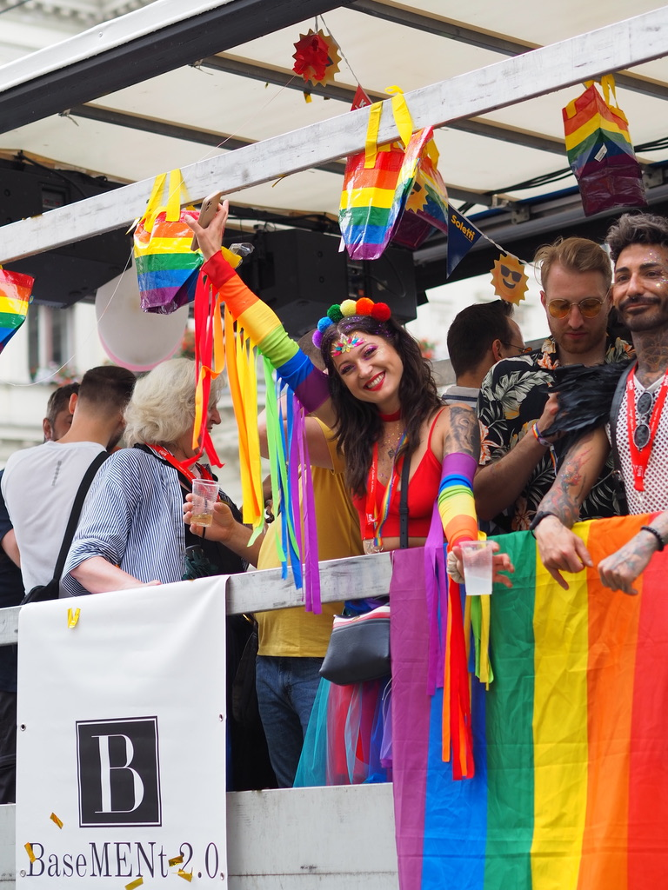
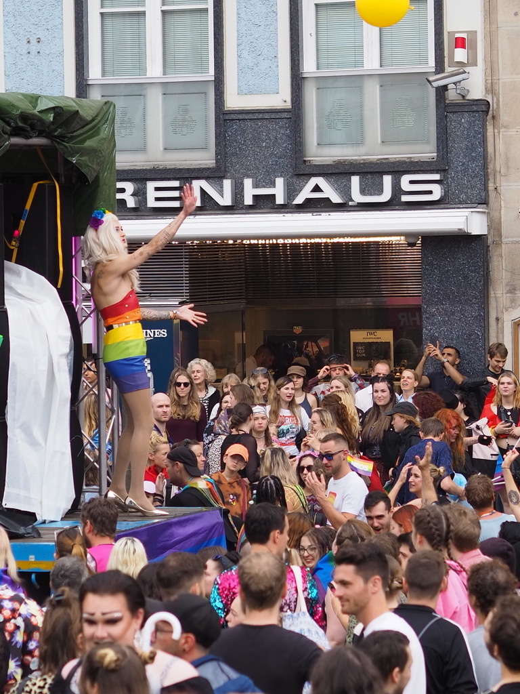
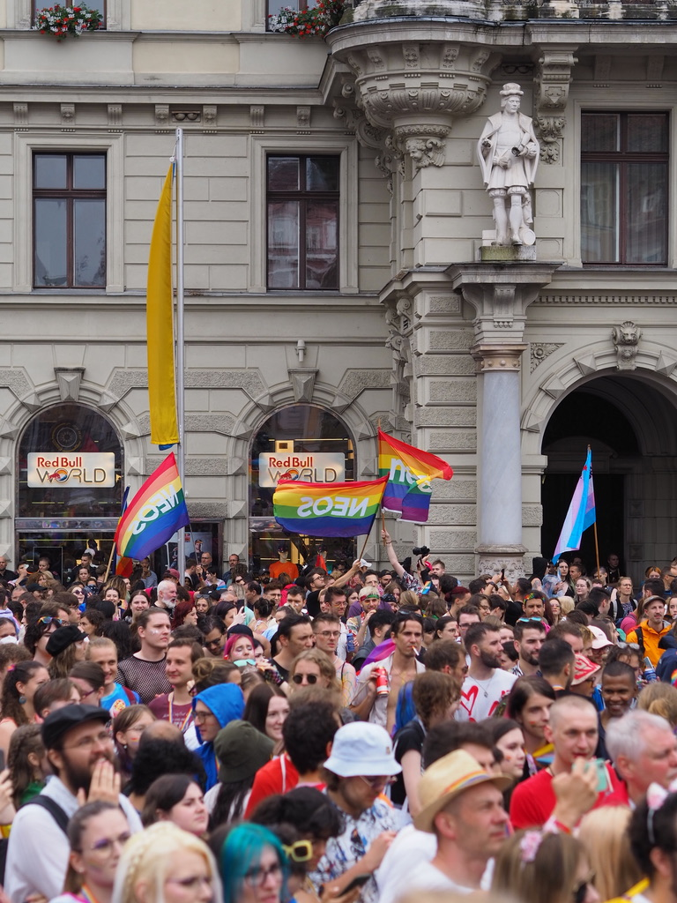
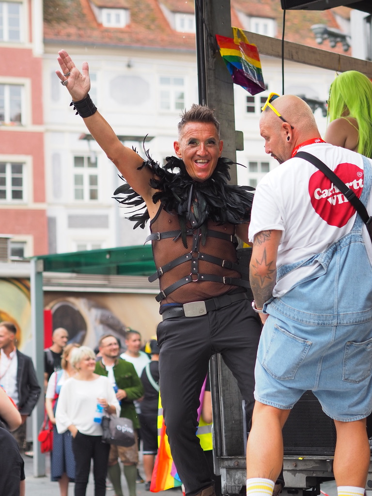
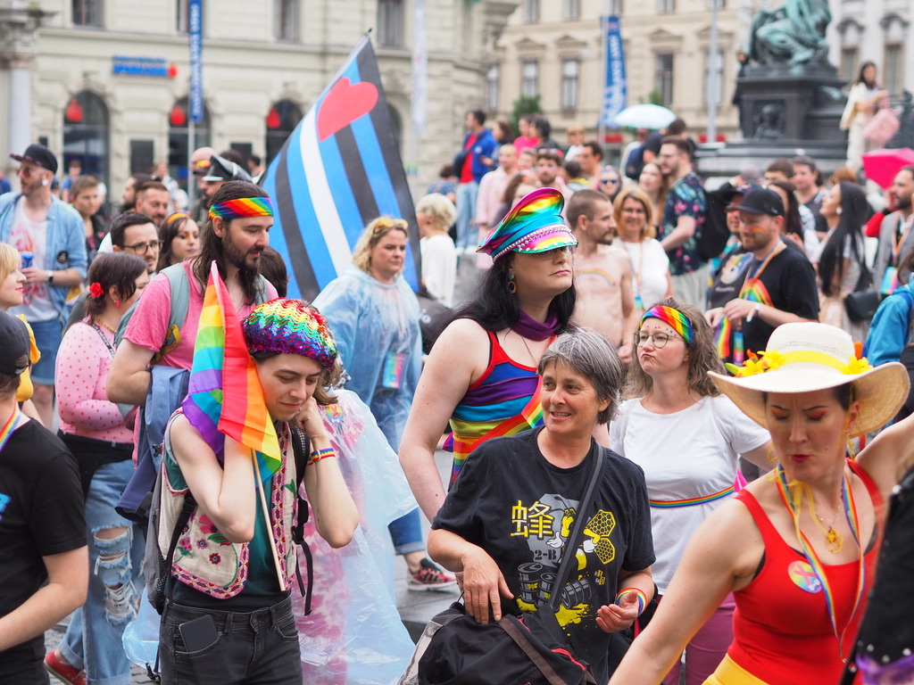
Ende Juni, wenn der Christopher Street Month weltweit gefeiert wird, verwandelt sich auch Graz in ein buntes Meer der Vielfalt und Toleranz. Der Christopher Street Day (CSD) in Graz ist weit mehr als nur eine Demonstration – er ist ein lebhaftes Fest der Liebe für Alle, das die Stadt mit Freude, Musik und einer Botschaft der Akzeptanz erfüllt. Die große CSD-Parade zieht sich durch die Innenstadt und mündet schließlich in einem ausgelassenen Fest im Volksgarten.
Die Parade selbst ist ein Spektakel aus Farben, Kostümen und fröhlichen Gesichtern. Menschen jeden Alters, jeder Herkunft und jeder Orientierung versammeln sich, um gemeinsam für Gleichberechtigung, Sichtbarkeit und Toleranz einzustehen. Es ist ein starkes Zeichen für eine offene Gesellschaft, in der alle Arten von Liebe willkommen sind und zelebriert werden. Nach der Parade geht die Feier im Volksgarten weiter, wo DJs auflegen, Bands spielen und eine entspannte Atmosphäre zum Tanzen, Plaudern und Wohlfühlen einlädt. Es ist eine Party, auf der sich jeder wohlfühlen kann, egal wer man ist oder wen man liebt. Der CSD in Graz ist ein wichtiges Event, das die Stadt bunter, lauter und liebevoller macht.
Fun-Facts zum CSD in Graz:
- Ort des Feierns: Der Volksgarten in Graz bietet eine perfekte Kulisse für das anschließende Fest, mit viel Grünfläche und Platz für alle Besucher.
- Gemeinsam stark: Der CSD ist nicht nur ein Fest, sondern auch eine wichtige politische Demonstration, die auf die Rechte von LGBTIQ+-Personen aufmerksam macht.
- Bunte Vielfalt: Die Parade ist bekannt für ihre kreativen und farbenfrohen Outfits, die die Vielfalt der Community widerspiegeln.
- Internationale Bewegung: Der CSD in Graz ist Teil einer weltweiten Bewegung, die an die Stonewall-Aufstände von 1969 erinnert und für die Rechte von queeren Menschen kämpft.